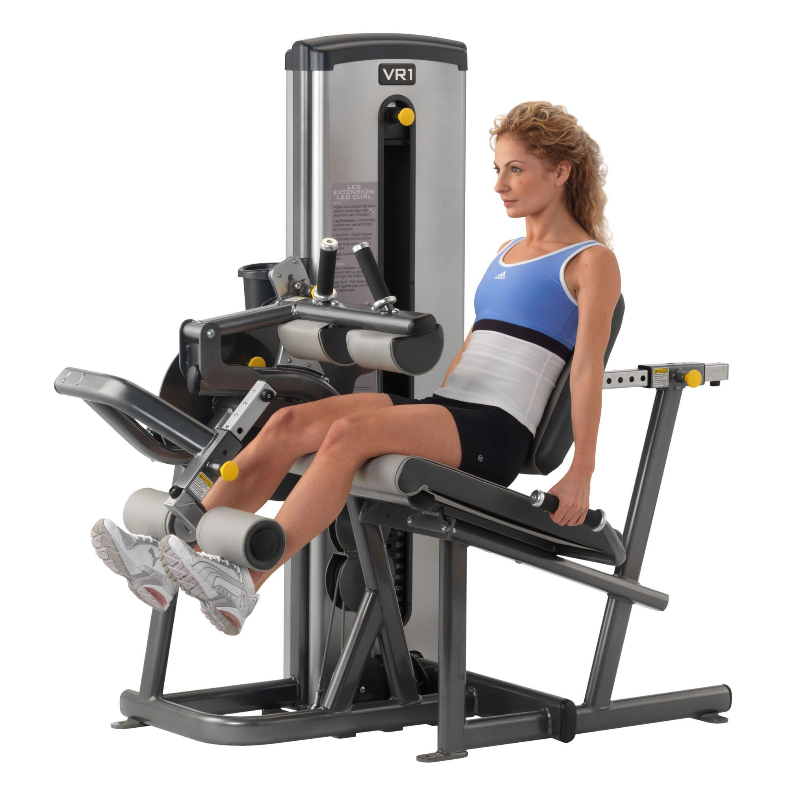
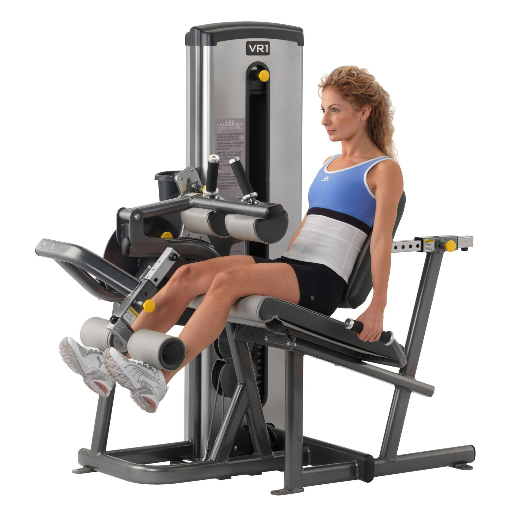

Leg Press
The leg press works your quads, hamstrings and glutes together in a multi-joint movement. Doing squats works the same muscles, plus your core, forcing your body to stabilize the extra weight you’re lifting. But squats require greater technique and expose you to greater risk of injury, if done incorrectly, than the leg press. This makes the leg press ideal for beginners just learning lifting techniques or anyone that wants to move a lot of weight for building mass, with relatively less risk of injury. Avoid the inclined leg press machine, if possible, because it’s very easy to flatten your back too much when pushing large amounts of weight on this machine. If you must use the inclined leg press, or when lifting large amounts of weight on any leg press, focus on maintaining the natural curve in your spine. Placing a lumbar roll in the small of your back can help you maintain proper posture.
Leg Curl
Weak hamstrings, the three muscles in the back of each thigh, are a common muscular imbalance that puts you at increased risk of knee injury and instability. The leg curl machine isolates your hamstrings, allowing you to strengthen them until they’ve “caught up” with your quadriceps instead of perpetuating the muscular imbalance. According to ExRX.net, your hamstrings should be more than 56 to 80 percent as strong as your quads, depending on your population.
Leg Extension
The leg extension machine isolates your quadriceps, the large four-muscle group on the front of your thigh. Although this muscle is often stronger than the hamstrings to the point of imbalance, and may not need to be strengthened individually, the leg extension machine is still ideal for building definition in the quads. If one leg is weaker than the other, you can use the leg extension machine to work that quad individually, helping develop it to match the other leg’s strength.